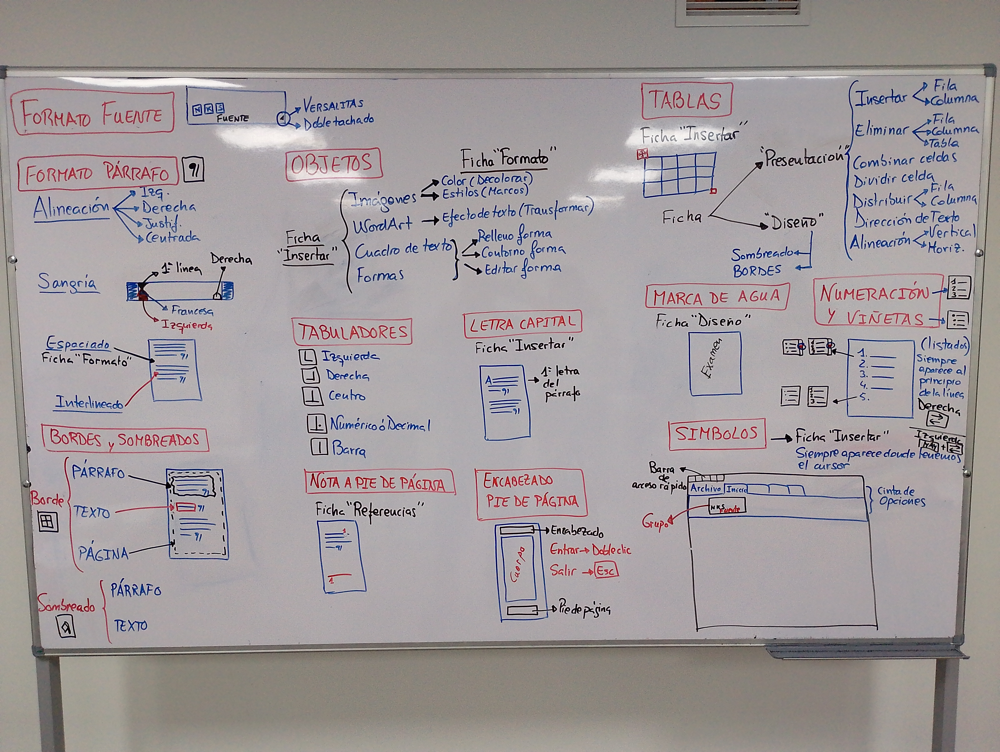
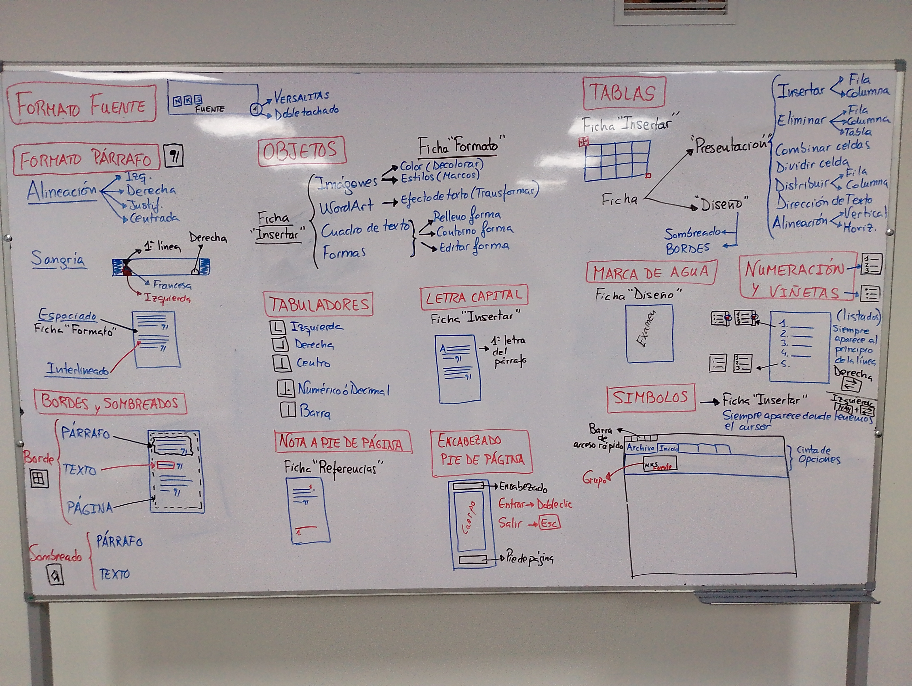

Tercera parte
Tabuladores
Tipos de tabulados; de izquierda, derecha, centro y numérico o decimal
Colocar los tabuladores en la regla.
Colocar la marca de tabulado sobre la regla, haciendo click con el ratón.
Para eliminar un tabulador situamos el puntero sobre el tabulado que deseamos eliminar y sin soltar desplazamos el puntero hacia abajo.
Note
Un tabulador extra, el tabulador de barra nos servirá colocar un separador -una línea, entre el texto.
Rellenos
- Utilizando los tabuladores, podemos incorporar rellenos. Son un tipo de marca que nos ayudará en la lectura del texto.
Seleccionar las líneas a las que les queremos poner el relleno.
Doble click sobre el tabulador que nos interesa.
En el cuadro que aparece, seleccionamos el tabulador en cuestión y coniguramos el tipo de relleno, a continuación botón aceptar.
Tip
el truco del return seleccionado y darle formato una columna para evitar que la comumna de abajo se desbarate, colocando word art arriba.
Desplazar un tabulador manteniendo la tecla “alt” pulsada, desplaza el puntero por todos los puntos.
Combinar correspondencia
Consiste en combinar un documento con una base de datos;
Cambiar a ficha correspondencia.
Desplegamos el botón “Iniciar combinación de correspondencia”.
- Paso a paso por el asistente …
Paso 1, carta
Paso 2, Utilizar documento actual
Paso 3, escribir una lista nueva. Aquí utilizaremos el otón crear para modelar los campo de la tabla que será nuestra “lista”.
Paso 4, le damos a siguiente, ya que tenemos escrita la carta.
Paso 5, inserta los campos con el botón “Insertar campo combinado”. El botón ABC vista previa nos muestra el nombre de la variable. Activando/desactivando este botón,
Paso 6, se utiliza para imprimir.
“Editar lista de destinatarios”, nos permitirá filtrar los datos. En la ventana Destinatarios de combinar correspondencia, escogemos “Filtrar”.
Para borrar el Filtro, volveremos a escoger el botón “Editar lista de destinatarios”.
Resumen
{kind=link}

{kind=link}
